|
Download the tank.zip file and put the
tank.map and tank.script in your etmain/maps
folder.
Run Radiant and open tank.map. You
will see the tank (smothered in trigger
boxes), which is repairable by
the allies, and a barrier, which is
constructible by the axis.
If you want to immediately see what the
tank will do in this sample map, compile it
and have a go in ET. You should build
the barrier, mend the tank and drive it to
the barrier, destroy the barrier and then
escort the tank (in an oval route back to
the start) until it stops and fires the
gun. Then come back to Radiant.
Hide the ceiling brush, it will make
examining the tank easier. We'll look
at each component - get a 3D view that shows
all the tank elements, like this:
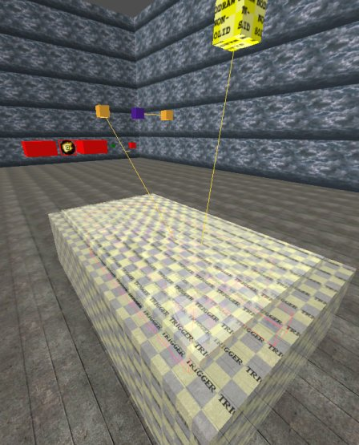
Note that it doesn't matter where the
tank or any of its components is actually
placed in the map - it will be immediately
placed on the first point of the route it
will follow, when the map starts.
Use shift+alt+click to select the largest
trigger box. We need to use
shift+alt+click quite a bit because many of
these components have origin brushes inside
and we want to include them when we examine
and hide each element.
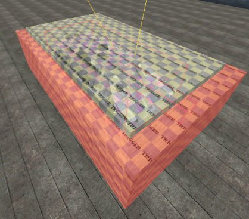
Press N, close the window, press N again.
This is the tank_trigger - when an
allied soldier stands within it, the tank is
enabled to move (notwithstanding other
reasons why it can't, such as damage or a
barrier).
Just use a regular mouse click on the 3D
pane and press H to hide the trigger while
leaving the entities window open, and
shift+alt+click the remaining big trigger
box. We'll use the same technique for
selecting and hiding each component.
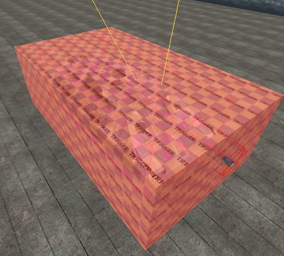
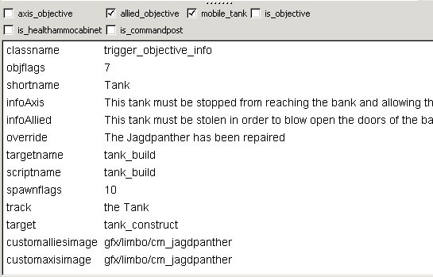 The
tank_build trigger is used to allow
allied engineers to repair the tank. As
this tank is to be esorted by the Allies,
the allied_objective box is ticked. The
shortname will be shown on the
command map. infoAxis, infoAllied
and override are redundant, and have
never been changed since their use in
Goldrush. The track is shown along
with "You are near". This
trigger is actually associated, via the target,
to a func_constructible called tank_construct.
To the player it appears that the
plier-waving is for the tank, when in fact
there is an invisible box in the air (the
nodraw non-solid yellow box) which he is
repairing (because the tank is not a
func_constructible). The customimages
tell ET which icon to show on the command
map.
Hide the trigger and shift+alt+click the
yellow box.
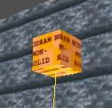
It's shown as a func_constructible.
The health is a dummy value and doesn't
matter what it is. The tank's health
will be specified elsewhere.
Hide it, and shift+alt+click the tank
brushes.
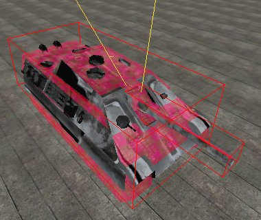
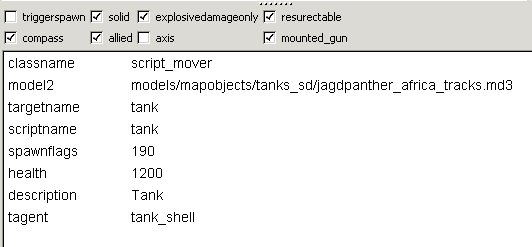 This
is the principal tank component. It is
a script_mover collection of brushes,
because the brushes have to be capable of
movement. The brushes are all clip
weapon metal textured, to make the
bullet ping sound when shot. By default,
script_movers are non-solid, so that players
would pass through them; so the solid
box is ticked. We only want explosives to
harm this script_mover, so the explosivedamageonly
box is ticked. When the script_mover is
destroyed, we want it to be able to start
again with full health, so the resurectable
box is ticked. It should appear on the compass,
and it can only be destroyed by the axis, so
the allied box is ticked. Yes,
a bit odd. Think of it as an allied
tank. The tank has a mounted_gun. The
model2 specifies that this
tank-shaped collection of brushes should
actually be visible as the jagdpanther
tracks, which is a model. The health
is 1200 which is the standard tank health
value. The description is what is
shown when the player looks at the tank and
sees its health bar. The tagent is
used to tell ET where the player using the
mounted gun should sit, ie in another entity
called the tank_shell.
Hide it and select the tank model:
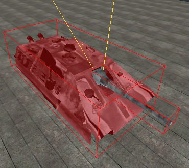
This is the tank_shell, ie the
hull of the tank. The model sits on
the tracks. Hide it and select the gun
barrel.
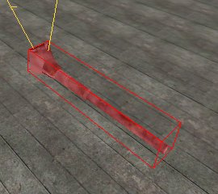
The tank turret is a separate entity, as
it has to be able to turn to the side.
Hide it and select the yellow
target_script_trigger on the left.
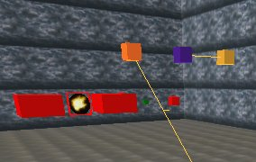
This is the tank_trigger
target_script_trigger. It tells ET
which script element to run when someone
stands near the tank. Hide it and
select the mauve func_timer box.
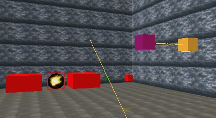
This is a timer, which executes every
second (wait = 1). Each time it
executes, it causes the script element
specified in the yellow
target_script_trigger shown on its right, to
run. Its purpose is to halt the tank
if no-one has been near it for a few
seconds. Hide it and select the yellow
box.
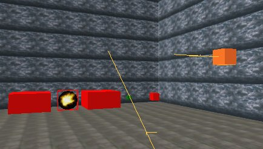
You can see this is the tank_disabler.
Hide it and select the big red box on the
left.
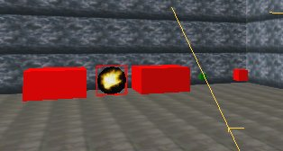
This is the smoke to be shown when the
tank is damaged. It will show black
smoke. Hide it and select the gun
flash model. You will probably need to
view the model from the back to select it.
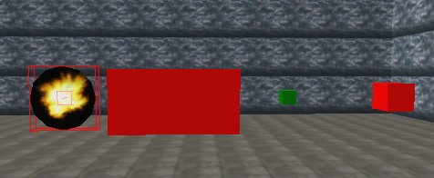
This is shown for a moment at the gun tip
when the gun fires. Hide it and select
the big red box next to it.
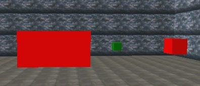
This is something I've added. I
thought it would be nice to have a puff of
smoke at the tip of the gun barrel when it
fires, so I added this smoke entity and
called it tank_gunsmoke. Hide it and
select the little green box.
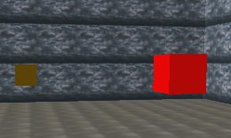
This is just a placeholder entity to
allow the script to manipulate sounds
associated with the tank. It gives the
script a named procedure it can use, called tank_sound.
Hide it and select the last red
box. This is a sound entity. I
used a different noise to the usual -
I don't remember why now, it was while I was
getting 2 tanks to work in the 2tanks
map - so you could put this back to
the standard gunfire sound: sound/vehicles/tank/tank_fire.wav
Unhide everything again. That
completes the examination of all the parts
that make up the tank.
|